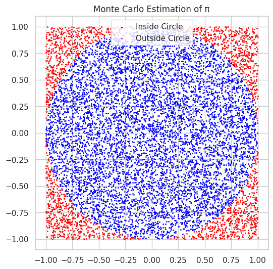
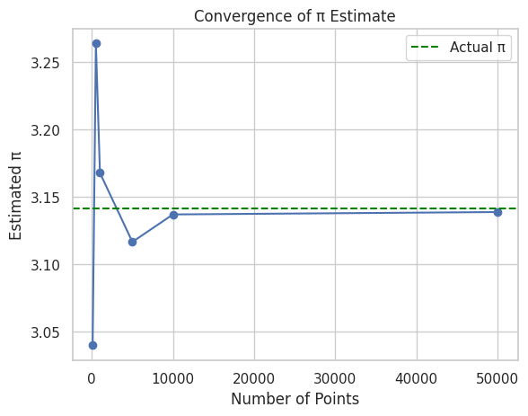
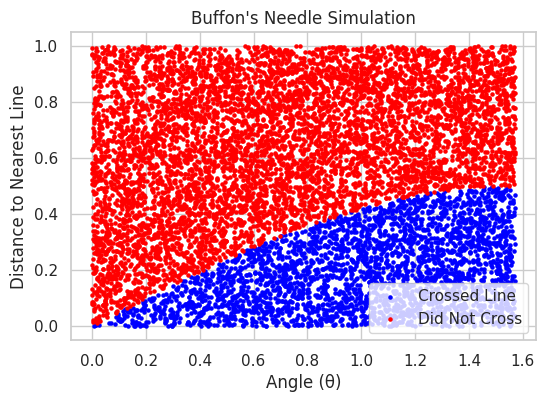

Problem 2
Estimating Pi using Monte Carlo Methods
Motivation
Monte Carlo simulations are a class of computational algorithms that rely on repeated random sampling to obtain numerical results. One of the most intuitive applications of this method is estimating the value of π using geometric probability.
This project demonstrates two powerful Monte Carlo approaches:
-
Using random points inside a square that bounds a unit circle.
-
Simulating Buffon's Needle problem—a famous probability experiment.
PART 1: Estimating π Using a Circle
Theoretical Foundation
We consider a unit circle (radius = 1) inscribed in a square of side length 2 (centered at origin).
The area of:
-
the circle \(= π·r² = π (since r = 1)\)
-
the square \(= (2·r)² = 4\)
The ratio of their areas is:
If we randomly generate points in the square, the probability that a point falls inside the circle is also \(\frac{\pi}{4}\)
Hence:
Python Simulation
import numpy as np
import matplotlib.pyplot as plt
def estimate_pi_circle(num_points):
x = np.random.uniform(-1, 1, num_points)
y = np.random.uniform(-1, 1, num_points)
inside_circle = x**2 + y**2 <= 1
pi_estimate = 4 * np.sum(inside_circle) / num_points
return pi_estimate, x, y, inside_circle
# Example
pi, x, y, inside = estimate_pi_circle(10000)
print("Estimated π:", pi)
Estimated π: 3.1336
Visualization
plt.figure(figsize=(6, 6))
plt.scatter(x[inside], y[inside], s=1, color='blue', label='Inside Circle')
plt.scatter(x[~inside], y[~inside], s=1, color='red', label='Outside Circle')
plt.gca().set_aspect('equal')
plt.title('Monte Carlo Estimation of π')
plt.legend()
plt.show()

Convergence Analysis
You can observe convergence by plotting estimated \(π\) values as a function of sample size:
samples = [100, 500, 1000, 5000, 10000, 50000]
estimates = [estimate_pi_circle(n)[0] for n in samples]
plt.plot(samples, estimates, marker='o')
plt.axhline(np.pi, color='green', linestyle='--', label='Actual π')
plt.title('Convergence of π Estimate')
plt.xlabel('Number of Points')
plt.ylabel('Estimated π')
plt.legend()
plt.grid(True)
plt.show()

PART 2: Estimating π Using Buffon’s Needle
Theoretical Foundation
Buffon’s Needle problem involves dropping a needle of length \(L\) onto a plane with parallel lines a distance \(D\) apart (where \(L \leq D\)).
If \(N\) needles are dropped and \(H\) of them cross a line, then:
This estimate depends on:
-
Random needle center positions
-
Random needle angles
Python Simulation
def estimate_pi_buffon(num_needles, L=1.0, D=2.0):
if L > D:
raise ValueError("Needle length must be <= distance between lines.")
# Generate random angles and distances to nearest line
theta = np.random.uniform(0, np.pi / 2, num_needles)
y = np.random.uniform(0, D / 2, num_needles)
crosses = y <= (L / 2) * np.sin(theta)
num_crosses = np.sum(crosses)
if num_crosses == 0:
return None # Avoid division by zero
pi_estimate = (2 * L * num_needles) / (num_crosses * D)
return pi_estimate, theta, y, crosses
# Example
pi_buffon, theta, y_vals, hits = estimate_pi_buffon(10000)
print("Estimated π using Buffon's Needle:", pi_buffon)
Estimated π using Buffon's Needle: 3.244646333549643
Visualization
plt.figure(figsize=(6, 4))
plt.scatter(theta[hits], y_vals[hits], color='blue', s=5, label='Crossed Line')
plt.scatter(theta[~hits], y_vals[~hits], color='red', s=5, label='Did Not Cross')
plt.title("Buffon's Needle Simulation")
plt.xlabel("Angle (θ)")
plt.ylabel("Distance to Nearest Line")
plt.legend()
plt.grid(True)
plt.show()

Comparison and Analysis
| Method | Estimate (10K samples) | Convergence Rate | Notes |
|---|---|---|---|
| Circle-based | ~3.14 | Fast | Simple geometry, fast to run |
| Buffon’s Needle | ~3.14 (can vary more) | Slower | Sensitive to randomness |
-
Circle method converges more quickly and stably.
-
Buffon’s method gives an elegant probabilistic interpretation of π.
Deliverables
-
Markdown document (this file) explaining the theory and showing code.
-
Python code for both simulations.
-
Plots for circle and needle simulations.
-
Analysis showing convergence and comparing methods.
Tools Used
-
NumPy– random sampling and math -
Matplotlib– plotting -
Jupyter Notebook(recommended for running interactively)
Conclusion
Monte Carlo methods provide a beautiful, visual, and practical way to understand π through randomness and geometry. While both methods are educational, the circle-based method is more computationally efficient and demonstrates fast convergence, whereas Buffon’s Needle showcases the elegance of probability theory in estimating a fundamental constant.